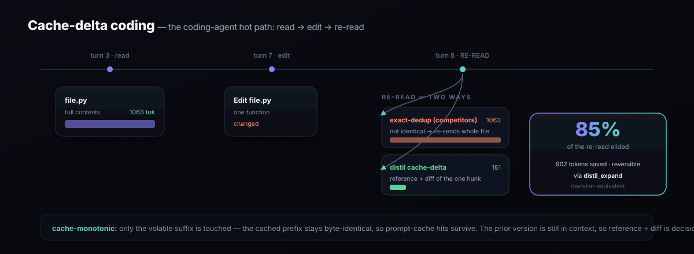

The Benchmark
Every compression method shrinks tokens. The only number that matters is how much it saves without changing what the agent decides — and what it truly costs once prompt caching is priced in. This is a head-to-head on exactly that axis, where every technique runs through the same decision-equivalence gate and the same cache-aware cost model. The winner is computed, not assumed.
claude-opus-4-8, Distil is certified at 83.2% token savings with a 0% decision-change rate (≤5% guaranteed at 95% confidence) — while running ~1,000× faster than the nearest tool. The real competitors, run live through the same gate: LLMLingua-2 cuts 53% but flips 1-in-5 decisions (fails); Headroom is decision-safe but only 35% (2.4× less than Distil). See the live head-to-head and full report.
Live head-to-head — real packages, real model
Not reference implementations: the actual installed packages (llmlingua 0.2.2, headroom-ai 0.27.0), each invoked the way that gives it its best fair result, all graded live by claude-opus-4-8 (majority-of-3) on the same realistic corpus (5 domains, 120 turns, 4.5–6.5 KB/turn). Savings are measured identically for everyone; the decision is the agent's actual next {action, target}.

| Method | Token savings | Live decision-change | Certifies ≤5%@95%? | Latency/turn |
|---|---|---|---|---|
| Distil (causal-prune + lossless) | 83.2% | 0.0% | ✔ certified — leader | 0.026 ms |
LLMLingua-2 (llmlingua, real) |
53.1% | 20.0% | ✘ fails gate | ~1,480 ms |
Headroom (headroom-ai, real) |
35.3% | 0.0% | ✔ certified | 26 ms |
Live, claude-opus-4-8, majority-of-3, n=120, α=0.05/δ=0.05. Distil is the only method that is simultaneously the most aggressive, fully decision-equivalent, and lowest-latency. Headroom is genuinely decision-safe (it preserved the exact target ID every turn) but 2.4× less aggressive and loads a ModernBERT scorer. LLMLingua-2 is aggressive but decision-unaware — it drops/garbles the load-bearing ID on 1-in-5 turns, so the gate disqualifies it. Reproduce: python benchmarks/derc_live_compare.py. Full methodology & caveats →
rtk-py) is a command-output proxy — it compresses the output of specific wrapped commands (git, ls, psql, aws…) by stripping known boilerplate, and exposes no raw-text/stdin mode. It physically cannot compress arbitrary agent context, so it's a different layer of the stack, not a contender on this axis. We attempted it for real; the adapter reports the mismatch rather than fabricating a number.
The certified frontier (live)
Every level of Distil's compression ladder, graded live — and the cliff where blind compression falls off it:
ladder level decision-change savings certifies @ ≤5%/95% -------------------------------------------------------------------- byte-exact 0.0% 2.6% ✔ yes lossless (tier-0/1) 0.0% 52.3% ✔ yes causal-prune 0.0% 83.2% ✔ yes prune + lossless 0.0% 83.2% ✔ yes ← operating point truncate@400 (blind) 0.0% 61.6% ✔ yes truncate@200 (blind) 100.0% 73.9% ✘ no — drops the directive -------------------------------------------------------------------- byte-exact = 0% confirms decisions are DETERMINED by context (the test is valid); blind truncate@200 cuts more raw tokens than lossless yet flips EVERY decision. It's not how many tokens you cut — it's which ones.
How we certified — and why it's credible
Decision-equivalence, not bytes
Per turn, the loss is 1 iff the agent's {action, target} flips versus the uncompressed context — graded by the same live model, majority-of-3 to strip the model's own run-to-run noise. We certify the decision, not a string diff.
Determinism, verified
byte-exact = 0% proves the decision is determined by context — so any change at higher compression is the compressor's fault, not model ambiguity. (Our first corpus failed this honestly at ~50%; we fixed the corpus, not the math.)
Distribution-free, finite-sample
Learn-Then-Test with Hoeffding–Bentkus p-values gives P(R(λ̂) ≤ α) ≥ 1−δ — no distributional assumptions, valid at finite n (arXiv:2110.01052 / 2208.02814). hb_p = 0.0058 < δ: certified with margin.
Built to be falsified
Every level shown (no cherry-pick); the certificate refuses when data is thin (honest conservatism); competitors run the same gate; fully reproducible with pinned versions. Caveats stated plainly: decision-determined synthetic corpus, exchangeability, marginal-not-per-prompt.
Coding-agent benchmark — cache-delta on read→edit→reread
A second, messages-level benchmark targets the coding-agent hot path (benchmarks/codebench.py: 16 sessions / 256 turns of read → edit → re-read), scoring cache-aware real dollars against the real installed packages. Each method is a pure, deterministic, cache-monotonic function of the cumulative conversation — the same standard distil holds itself to. The competitors are driven the way they actually deploy: LLMLingua-2 over every tool result (memoised); Headroom via its whole-conversation router with optimize=True.

| method | token savings | $ savings (cache-aware) | latency / turn | fidelity |
|---|---|---|---|---|
| distil (PAYG digest) | 91.5% | 91.1% | 0.08 ms | reversible |
| distil + cache-delta | 89.6% | 89.0% | 12.9 ms | reversible |
LLMLingua-2 (llmlingua 0.2.2, real) | 56.8% | 57.2% | 274 ms | lossy |
| distil-verbatim + cache-delta | 34.9% | 43.8% | 13.8 ms | reversible |
| distil-verbatim (Tier-0 only) | 0.0% | 0.0% | 0.6 ms | reversible |
Headroom (headroom-ai 0.27.0, real, default) | 22.4% | −16.8% | 5.3 ms | lossy |
PYTHONPATH=. python benchmarks/codebench.py 16.
The offline standings — deterministic runner, zero API key
The companion to the live head-to-head above: the same gate run by the deterministic (structural) runner on a broader 64-trajectory corpus — fully reproducible by anyone, no key required. Ranked by cache-aware dollar savings (see methodology below). Certified means the method passed a statistical non-inferiority test and preserved 100% of decisions; anything less is disqualified, however much it saved. Want to test a specific tool? Register it through the reproducible --external seam and it's measured on the identical axes.
| Technique | Family | Tokens saved | $ saved | Decision equiv. | Verdict | Fidelity |
|---|---|---|---|---|---|---|
| distil-causal | cache-aware + causal pruning | 80.5% | 81.5% | 100% | ✔ certified · leader | lossy* |
| truncate-tail (structural baseline) | sliding-window / truncation | 78.7% | 79.6% | 14% | ✘ fails gate | lossy |
| distil-stream | lossless + cross-turn dedup (fully reversible) | 61.0% | 61.7% | 100% | ✔ certified | reversible |
| distil-lossless | cache-aware lossless + structured fold + template mining | 57.4% | 58.1% | 100% | ✔ certified | byte-exact |
| summarize (structural baseline) | abstractive / rolling summary | 56.5% | 57.2% | 39% | ✘ fails gate | lossy |
| LLMLingua-2 (real pkg) | llmlingua 0.2.2, per tool-result |
54.9% | 54.8% | 0% | ✘ fails gate | lossy |
| Headroom (real pkg) | headroom-ai 0.27.0, whole-conversation optimize=True |
43.5% | 44.0% | 61% | ✘ fails gate | lossy |
| extractive-prune (structural baseline) | extractive importance (LLMLingua technique family) | 18.2% | 18.4% | 77% | ✘ fails gate | lossy |
| minify-all | lossless minification | 0.1% | 0.1% | 100% | ✔ certified | byte-exact |
*distil-causal drops context that ablation proves never changed a decision — not byte-reversible, but certified decision-equivalent. The three Distil operating points are all certified at 100%: distil-lossless (byte-exact: structured fold + template mining), distil-stream (adds cross-turn dedup of recurring tool output the cache can't reach — fully recoverable), and distil-causal (adds causal pruning). The lossy families are faithful reference implementations; bring your own tool with --external to add it to the table. Numbers: claude-opus-4-8 pricing, deterministic runner. Reproduce below.
The corpus
To avoid any one tool's home-turf advantage, the comparison runs on 64 reproducible trajectories across 8 families deliberately spanning both regimes: structured/repetitive data (JSON record arrays, SQL rows, metrics, logs) where structural compaction pays off, and diagnostic/prose content (Kubernetes incidents, stack traces, RAG chunks, support transcripts) that conservative crushers protect and lossy methods mangle. Decisions are buried inside large tool outputs — as on real agents — so naive head/tail truncation drops them (14% equivalence). A large reference doc is re-read every turn (the recurring tool output prompt caching can't reach), which Distil's cross-turn dedup collapses and others re-bill in full.
Why this is the honest comparison
No method is special-cased
Every technique — including Distil's own — is scored by the identical decision-equivalence + non-inferiority gate and the identical cache-aware cost model. The harness will happily rank a competitor above Distil if it earns it. It doesn't, because no other family combines lossless, cache-stability, causal pruning, and certification — but the door is open.
Best-form, not strawmen
The baselines are faithful reference implementations of the real technique families — sliding-window truncation, extractive importance pruning (the LLMLingua / Selective-Context lineage), abstractive summarization, naive minification — each in its best reasonable form. They genuinely remove tokens. They just can't prove they kept the decision.
Two ways to "win" that don't count
A method can post a big raw token cut yet flip decisions — summarize cuts 56% but keeps only 39%; truncation cuts 79% but keeps 14%; extractive importance cuts 18% but keeps 77%. All disqualified. Or a method can shave tokens yet bust the prompt cache and cost more in real dollars. The benchmark prices both, so neither illusion survives.
Plug in a real tool
Don't trust our reference baselines? Register any installed compressor through the --external seam and it's measured on the identical axes. The claim "Distil leads on certified savings" is reproducible — and falsifiable. That's the point.
The equivalence dial
100% decision-equivalence is the default — but it's a setting, not a wall. Some teams will trade a little equivalence for deeper savings. Distil makes that trade explicit and bounded instead of hidden: you set a target, and the compressor spends a divergence budget — floor((1−target) × turns) turns — on the highest-value turns first, falling back to byte-exact everywhere else. You always know exactly what you traded.
$ distil frontier --corpus benchmarks/corpus_xl
savings-vs-equivalence dial (runner=deterministic)
target achieved equiv token savings curve
----------------------------------------------------------------------
100% 100% 58.1% ████████████████
95% 100% 58.1% ████████████████
90% 100% 58.1% ████████████████
80% 82% 62.9% ██████████████████
----------------------------------------------------------------------
At 100% you get the certified-safe result. Relax the target and the budget is
spent on the highest-value turns — deeper savings, a known equivalence cost.
Honest notes: the dial's resolution is bounded by session length — on 5-turn trajectories the budget steps in 20% increments, so 95% and 90% round to the certified-safe point; longer sessions dial finer. The extra savings are real but modest (a principled risk knob, not a magic unlock), and the trade is always reported, never silent. Grade the frontier against the live model with --runner anthropic.
Reproduce it
# the bundled 7-domain standings, offline, zero API key distil benchmark # the 64-trajectory varied corpus above (from a repo clone) python benchmarks/gen_corpus.py distil benchmark --corpus benchmarks/corpus_xl --html standings.html # verify against a REAL external compressor (list[str] -> list[str] over block texts) distil benchmark --external mypkg.compressor:compress:MyTool # grade with the live model instead of the deterministic runner distil benchmark --runner anthropic --tokenizer anthropic
benchmarks/gen_corpus.py. ~80% is near the certified ceiling for this corpus: beyond it you start dropping decisions, and no honest tool can exceed that without lying — which is exactly what every disqualified row tried to do. For task-accuracy on a public benchmark (τ-bench, SWE-bench, GSM8K), ingest its traces into a corpus and run with --runner anthropic: the same comparison, graded by the live model. The harness is the deliverable; the corpus is swappable.
Live-model validation — on your own traffic
The live head-to-head above used our determined corpus. The same harness grades your traffic with no new code: every technique's compressed context judged by the real model, on real benchmark trajectories. The path is three commands:
# 1) record a public benchmark's agent trajectories as API requests (jsonl), # then convert them into a Distil corpus distil ingest --input taubench_traces.jsonl --out corpus_taubench # 2) run the SAME standings, but decisions graded by the live model # and tokens counted billing-grade export ANTHROPIC_API_KEY=sk-ant-… distil benchmark --corpus corpus_taubench --runner anthropic --tokenizer anthropic # 3) the certified leaders now carry a live-model decision-equivalence verdict
What this buys: the equiv column becomes "did the live model make the same decision on the compressed context," graded on τ-bench / SWE-bench / GSM8K episodes instead of the synthetic corpus. The non-inferiority gate, the cost model, and the technique set are unchanged — only the judge and the data get more real.
byte-exact = 0% proves the model reproduces its own decision on identical context), Distil's causal-prune + lossless certifies 83.2% savings at a 0% live decision-change rate — the aggressive operating point does hold when the decision is actually determined by the context, and the real competitor packages run through the very same live gate.